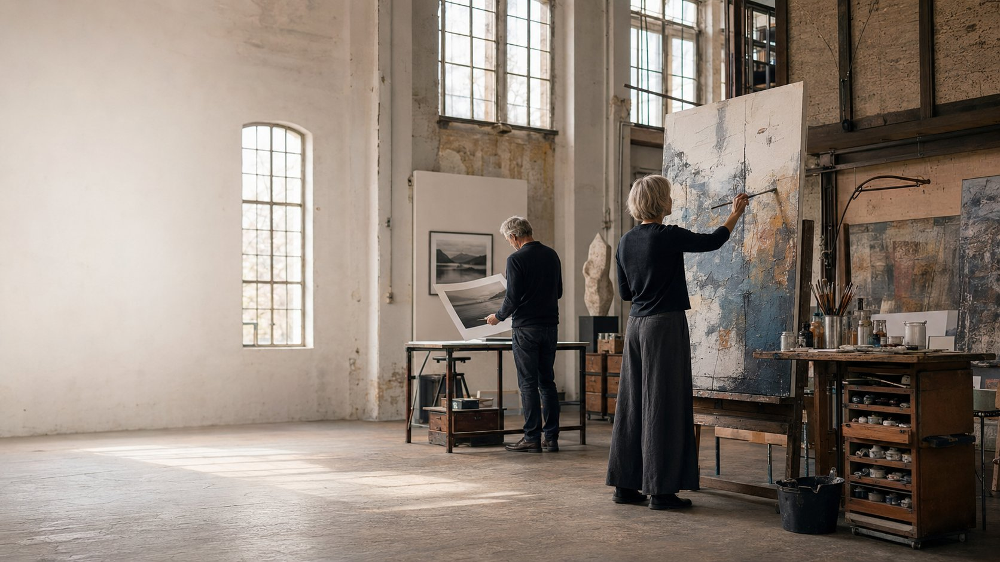
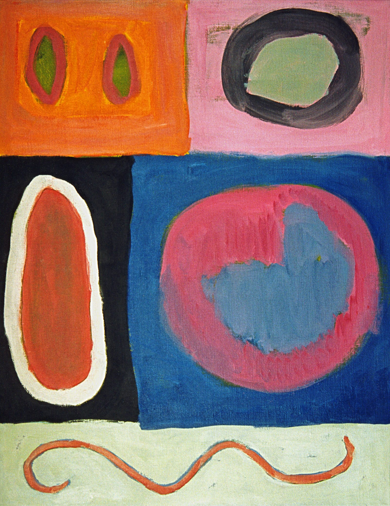
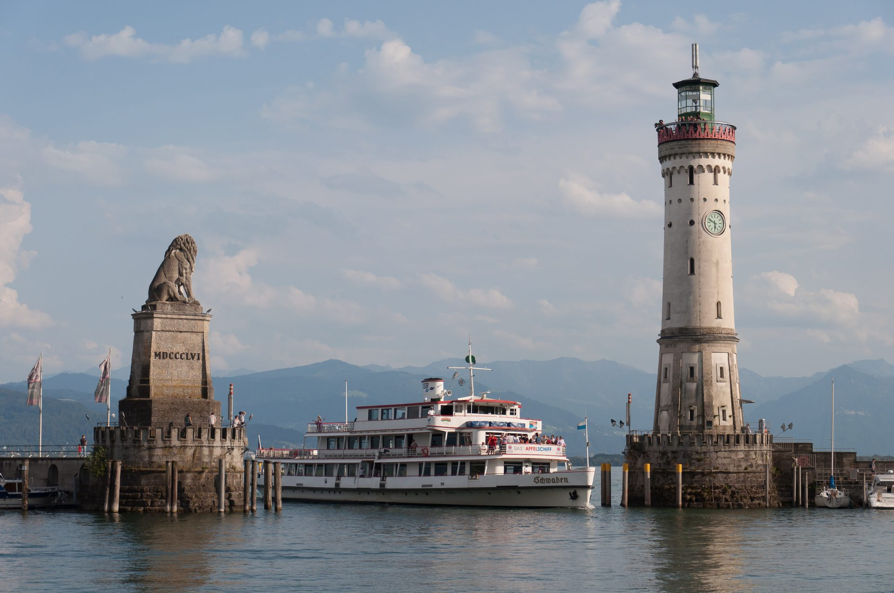
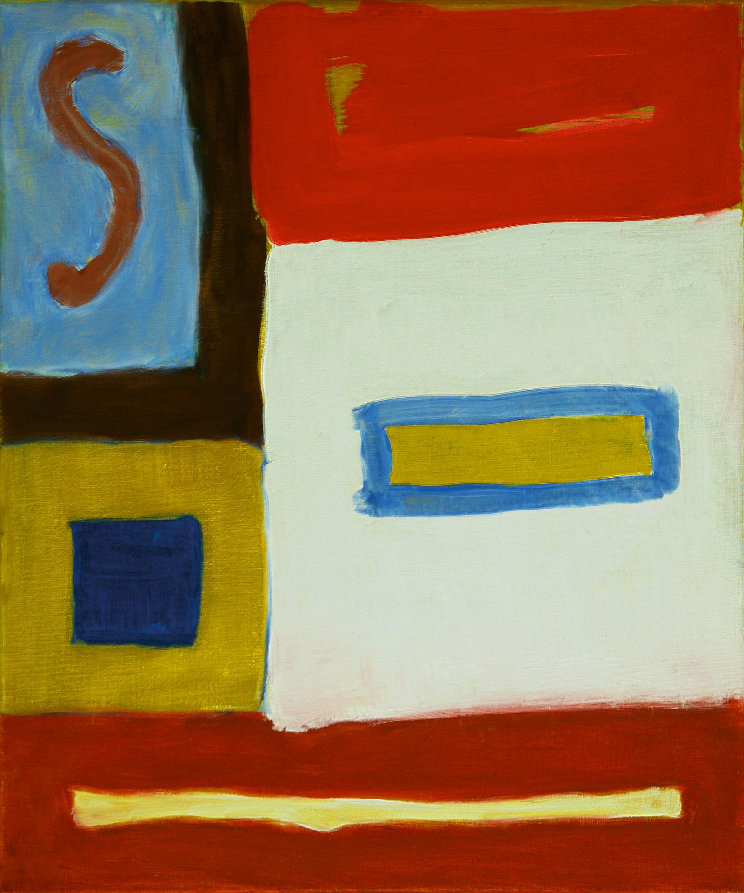

Kunst entsteht im Raum
Malerei, Fotografie und wechselnde Ausstellungen im Atelier Hendricks – in den lichtdurchfluteten Hallen der ehemaligen Konstanzer Textilmanufaktur.
Zwei künstlerische Positionen, ein gemeinsamer Raum
Susanne Hendricks arbeitet in Malerei, Collage und Fotografie; Rainer Hendricks in der Fine-Art-Fotografie. Beide zeigen ihre Arbeiten dort, wo sie entstehen: in einer ehemaligen Textilmanufaktur im Konstanzer Stromeyersdorf, ergänzt um wechselnde Ausstellungen mit Skulptur und Schmuck.
Ein erster Einblick in beide Werkgruppen



Eine ehemalige Textilmanufaktur als Atelierraum
Die großzügigen, lichtdurchfluteten Räume der früheren Konstanzer Textilmanufaktur Stromeyer prägen die Atmosphäre des Ateliers ebenso wie die Werke selbst. Das Atelier ist Teil des Stromeyersdorf-Quartiers und vernetzt sich mit weiteren Kunstschaffenden vor Ort.
Mehr über den RaumBewertung
Gut zu wissen
Kann ich das Atelier ohne Termin besuchen?
Zu den veröffentlichten Öffnungszeiten (Mo–Fr, 10–12 Uhr und 14–18 Uhr) sind Sie willkommen. Für einen persönlichen Rundgang oder außerhalb dieser Zeiten empfehlen wir eine Anmeldung über das Kontaktformular.
Kann ich Werke von Susanne oder Rainer Hendricks erwerben?
Ja. Bitte nutzen Sie das Anfrageformular auf der Kontaktseite und wählen Sie „Werk anfragen“, um Informationen zu Verfügbarkeit, Format und Preis zu erhalten.
Beteiligt sich das Atelier an Open Art Stromeyersdorf?
Ja, am 10. Oktober 2026 von 11–18 Uhr öffnet das Atelier im Rahmen von Open Art Stromeyersdorf seine Türen. Details finden Sie auf der Ausstellungsseite.
Ist das Atelier barrierefrei zugänglich?
Nicht auffindbar – offene Frage an den Auftraggeber. Bitte teilen Sie uns mit, ob ein stufenfreier Zugang besteht, damit wir das hier verbindlich angeben können.
Bietet das Atelier Kooperationen mit Galerien, Hotels oder Unternehmen an?
Ja. Wählen Sie im Kontaktformular „Kooperation besprechen“ – wir melden uns mit passenden Vorschlägen zu Werken und Ausstellungsformaten.